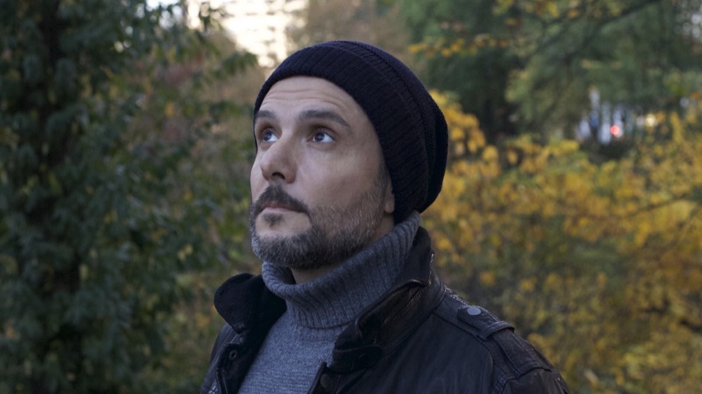

In breve
Quasi trent’anni sui grandi palcoscenici d’Europa e d’America — il Metropolitan, la Scala, la Staatsoper di Vienna, il Covent Garden, l’Opéra di Parigi — e un secondo atto come direttore artistico, produttore, imprenditore culturale e Professore di Conservatorio.
Nato a Pompei e cresciuto a Trieste dentro il Conservatorio Giuseppe Tartini, dove il padre faceva il custode, Giordano studia prima flauto. La voce la scopre pochi giorni prima del diploma, e a diciotto anni passa alla classe di canto del soprano Cecilia Fusco. Debutta nel 1997 nel ruolo del titolo nella Clemenza di Tito di Mozart, dopo aver vinto il concorso “Adriano Belli” di Spoleto.
Dai ruoli lirici dei suoi vent’anni — Alfredo, Rodolfo, Werther, Roméo, Des Grieux — la voce cresce verso il repertorio lirico-spinto: Cavaradossi, Don Carlo, Don José, Andrea Chénier, Maurizio. Ha lavorato con Claudio Abbado, Riccardo Chailly, Lorin Maazel, Sir Simon Rattle, Zubin Mehta, Sir Antonio Pappano, James Levine e Kirill Petrenko, in scena accanto a Renée Fleming, Anna Netrebko e Angela Gheorghiu.

Oggi
Tre cose insieme
In scena
Opera e concerto. Cavaradossi, Don Carlo, Don José, Andrea Chénier, Des Grieux — e il programma da recital Parlami d’Amore, che tiene insieme Verdi, Puccini e Gounod con la canzone napoletana.
Festival e produzione
Direttore artistico del Minthis Music Festival di Pafos, Cipro — tre edizioni dal 2024, la quarta confermata per il 2027 — e cofondatore di Laimtee, che produce concerti di musica classica e teatro.
Docente di Conservatorio
Cattedra di canto al Conservatorio Statale di Musica “Giovanni Pierluigi da Palestrina” di Cagliari. Una cattedra vera in un’istituzione statale, non una masterclass occasionale.
Calendario
Impegni
Annunciato
- 2027
Minthis Music Festival, quarta edizione
Anfiteatro di Minthis, Pafos, Cipro — direzione artistica. Date da annunciare.
2026
- 19 set
Opera Night Under the Stars
Teatro antico di Kourion, Cipro - 17 set
Parlami d’Amore — recital
Laeiszhalle, Amburgo · Hamburger Kammerorchester, Christian Kunert - 8–12 lug
Minthis Music Festival, terza edizione
Pafos, Cipro — direzione artistica. Florian Christl, Niklas Liepe, Jeneba Kanneh-Mason, Vision String Quartet, Günther Groissböck, Nelson Calzi, Claire Martin.
Repertorio
Ruoli principali
- Cavaradossi Tosca Bayerische Staatsoper · Staatsoper di Vienna · Covent Garden · Metropolitan · Opéra di Parigi · San Francisco Opera · Teatro Bol’šoj
- Rodolfo La bohème Metropolitan · Opéra di Parigi · Covent Garden · Bayerische Staatsoper · Staatsoper di Vienna · Semperoper di Dresda
- Alfredo Germont La traviata Metropolitan · Scala · Staatsoper di Vienna · Deutsche Oper Berlin · Teatro Bol’šoj · Santa Fe Opera
- Des Grieux Manon · Manon Lescaut Metropolitan · Scala · Staatsoper di Vienna · Covent Garden · Festival di Pasqua di Baden-Baden (Berliner Philharmoniker, Sir Simon Rattle)
- Don Carlo / Don Carlos Verdi Maggio Musicale Fiorentino (Zubin Mehta) · Deutsche Oper Berlin · Dutch National Opera · Opera di Stoccarda (versione francese)
- Werther Massenet Bayerische Staatsoper · Opéra national du Rhin · Opernhaus di Zurigo · Théâtre du Capitole, Tolosa
- Andrea Chénier Umberto Giordano Staatsoper di Vienna — Marco Armiliato, regia di Otto Schenk

Didattica
Conservatorio di Cagliari
Giordano tiene la cattedra di canto al Conservatorio Statale di Musica “Giovanni Pierluigi da Palestrina” di Cagliari. È una cattedra vera in un conservatorio statale: due giorni di lezione a settimana per tutto l’anno accademico, circa 320 ore, arrivando da Trieste.
In aula porta quello che da una registrazione non si impara: come un ruolo si costruisce davvero e poi si regge, sera dopo sera, in teatri dove non esiste il secondo ciak. Al canto è arrivato dal flauto, e insegna ancora da dentro la musica — il fraseggio, il fiato, la linea — non da fuori.

Stampa
Cosa ha scritto la critica
«Il tenore italiano Massimo Giordano canta Des Grieux con una dizione nitida e, nei momenti migliori, un suono squillante. […] È trascinante nell’aria in cui implora il capitano della nave di Manon di portarlo in America con lei.»
George Loomis · The New York Times · 21 aprile 2014
«Massimo Giordano, nell’aspetto e nella voce il perfetto tenore italiano, dotato di una voce commovente e facile in tutti i registri, calda e insieme virile.»
Frederik Hanssen · Der Tagesspiegel · 18 aprile 2014
«Massimo Giordano è un Cavaradossi virile e forte, che coltiva il ruolo con nobiltà e canta con un’esatta differenziazione dell’espressione.»
Karlheinz Roschitz · Kronen Zeitung · 19 gennaio 2014
«Massimo Giordano incarna perfettamente il personaggio di Des Grieux, con eleganza di fraseggio e passione.»
Stefano Nardelli · Il giornale della musica · 12 aprile 2014
Media
Video
Disco
Amore e Tormento

BMG Rights Management · uscito il 6 maggio 2013 · Ensemble del Maggio Musicale Fiorentino, Carlo Goldstein
Il primo disco da solista: arie italiane celebri da Tosca, Andrea Chénier, Turandot, L’Arlesiana e Adriana Lecouvreur, accanto a pagine meno note — fra queste «Dolce notte misteriosa» da Marcella di Umberto Giordano.
Altre incisioni
- 2000Gala verdiano, concerto di fine anno dei Berliner Philharmoniker con Claudio Abbado — pubblicato come Gala from Berlin 2000 · Tutto nel mondo
- 2000Massenet, Le Jongleur de Notre-Dame, Teatro dell’Opera di Roma — registrazione dal vivo
- —Verdi, I Lombardi alla prima crociata (Oronte), con Dimitra Theodossiou e Giorgio Surian
- 2004Puccini, Gianni Schicchi (Rinuccio), Festival di Glyndebourne con Vladimir Jurowski — DVD
Per teatri e stampa
Cartella stampa
Biografia in tre lunghezze, elenco del repertorio e fotografie ad alta risoluzione, libere da usare con il credito del fotografo.
- BiografiaCorta, media e lunga — su questo sito
- RepertorioElenco completo dei ruoli con i teatri
- FotografieFile ad alta risoluzione su richiesta: press@massimogiordano.com
Contatti